Prato Feito
Uma refeição prática, completa e com aquele sabor de comida feita em casa.
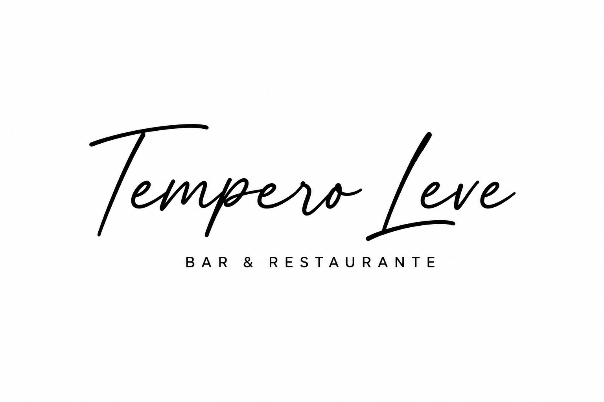
Bar & Restaurante • Desde 2007Uma história construída com trabalho, carinho e comida de verdade. Do café da manhã ao almoço, o Tempero Leve faz parte da rotina de quem passa por aqui.
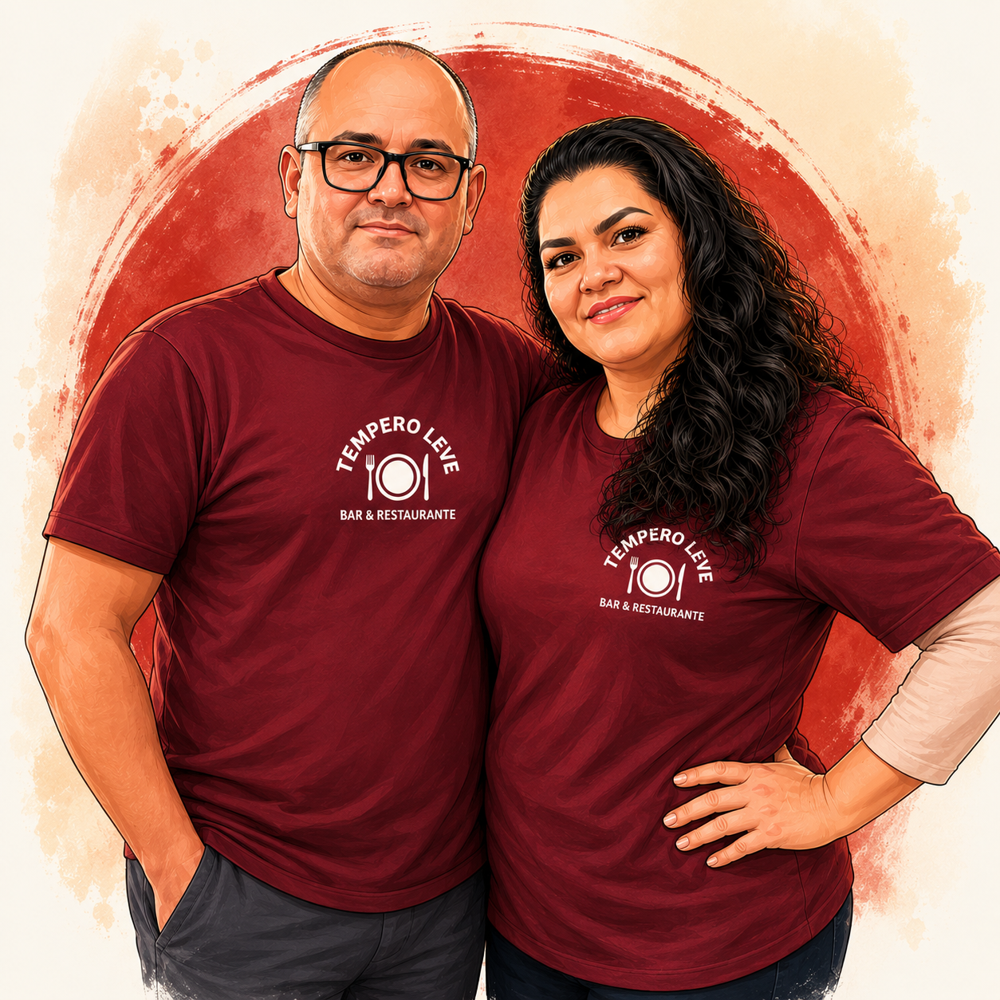
Seja para comer com calma no salão ou levar para casa, escolha a opção que combina melhor com o seu dia.
Uma refeição prática, completa e com aquele sabor de comida feita em casa.
Monte seu prato com liberdade e aproveite as opções disponíveis no buffet.
Escolha exatamente o que deseja e monte seu prato do seu jeito.
A comida do Tempero Leve pronta para acompanhar sua rotina onde você estiver.
Pratos que já fazem parte da rotina e da tradição de quem almoça com a gente.
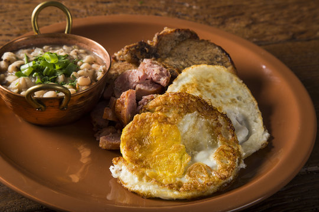
Segunda também é dia de costela.
Comida caseira com sabor que lembra casa.
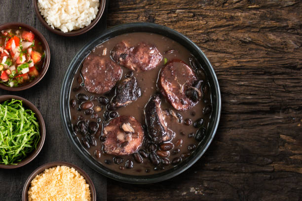
Feijoada caprichada, servida toda quarta-feira.
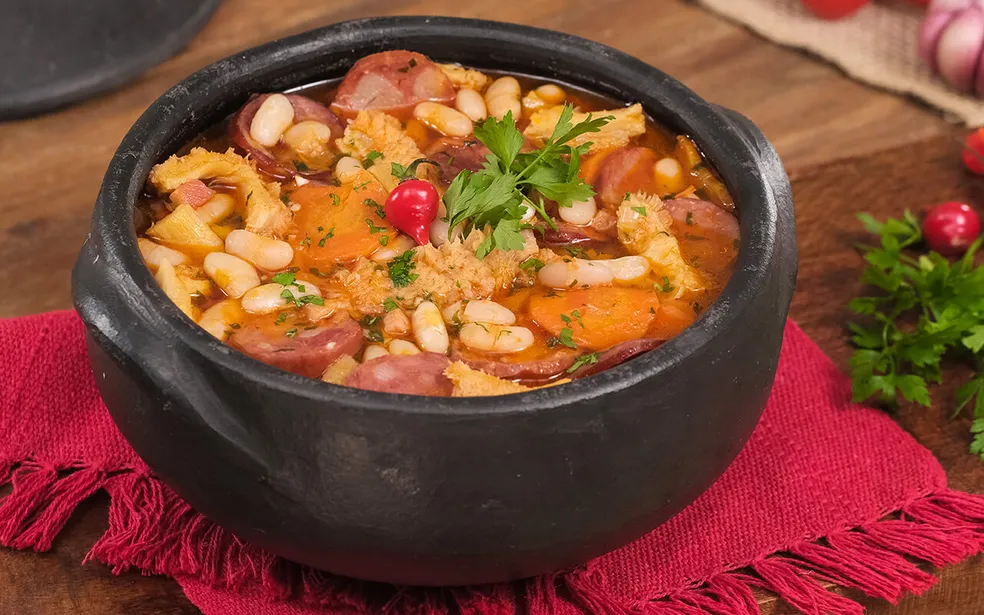
Um sabor que mantém viva uma parte das raízes nordestinas da nossa história.
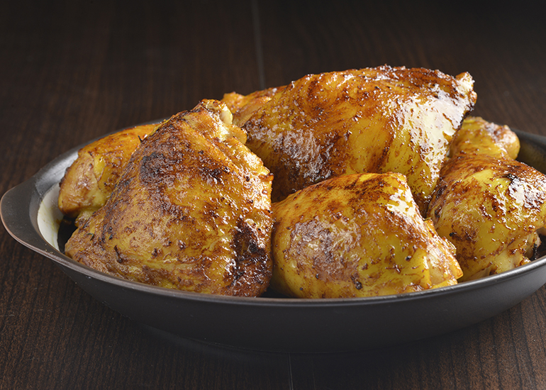
Um clássico para deixar a sexta-feira ainda mais saborosa.
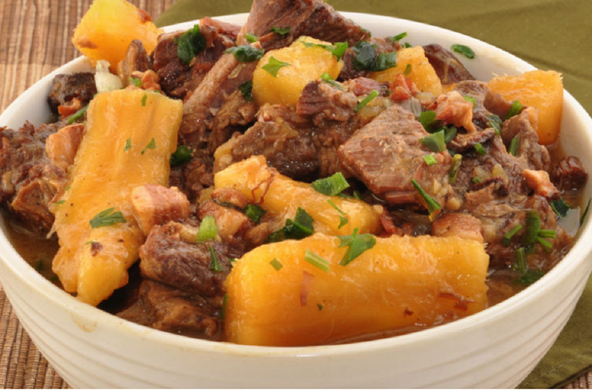
Costela com mandioca para o sábado. Também servimos feijoada.
Os acompanhamentos e demais opções podem variar conforme o dia e a disponibilidade.
Café fresquinho, pão na chapa e salgados na vitrine para começar bem o dia.
Pratos da casa, especiais da semana, buffet, café da manhã, bebidas e outras opções para diferentes momentos do dia.
Nosso cardápio acompanha a rotina da cozinha. Por isso, opções, acompanhamentos e disponibilidade podem variar.
Consultar opções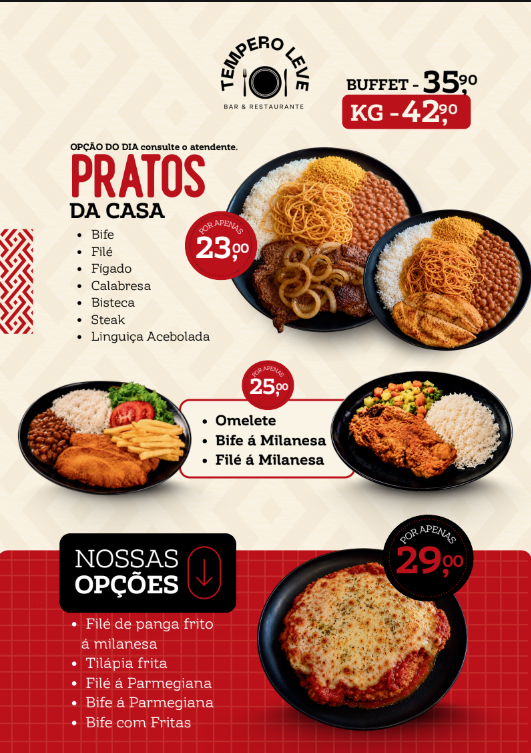
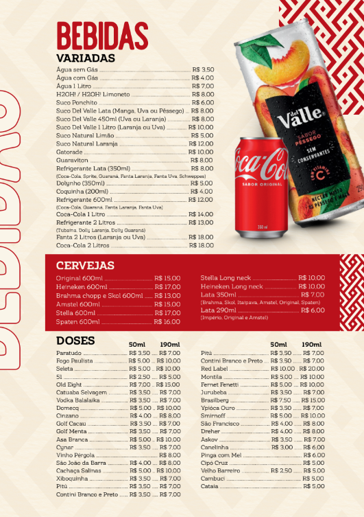
Seu Estêvão e Dona Marinete chegaram do Nordeste a São Paulo com poucos recursos, mas trouxeram disposição para trabalhar, carisma e uma forma especial de receber as pessoas.
Foi conquistando um cliente de cada vez que construíram sua vida em São Paulo e fizeram do Tempero Leve um lugar conhecido tanto pela comida quanto pelo jeito acolhedor de atender.
As raízes nordestinas continuam presentes na história da casa e também na cozinha, em pratos como a dobradinha. Para quem frequenta o restaurante, Seu Estêvão e Dona Marinete são a verdadeira cara do Tempero Leve.
Um espaço simples, acolhedor e feito para receber quem já é de casa e quem está chegando pela primeira vez.
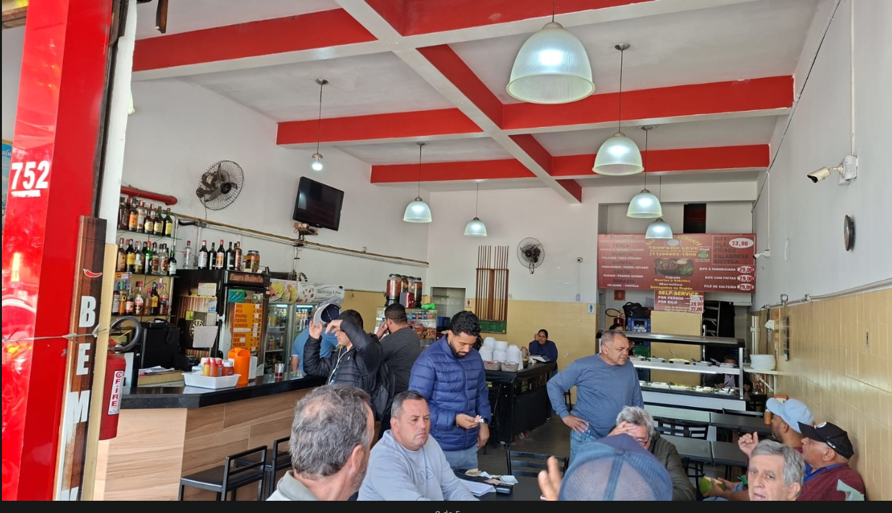
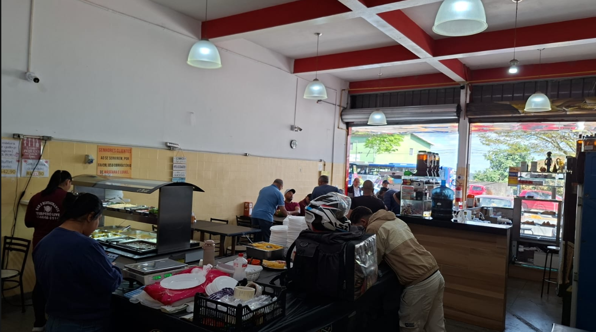
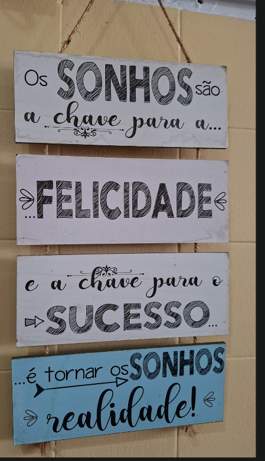
Consulte o cardápio disponível no dia e escolha o canal que preferir para fazer seu pedido.
Os salgados disponíveis na vitrine do restaurante não fazem parte do delivery pelo iFood.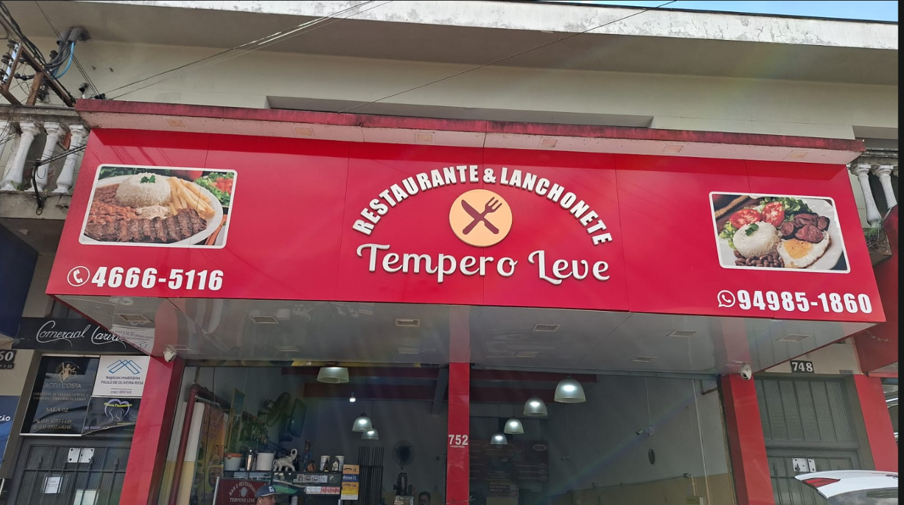
Venha tomar seu café da manhã, aproveitar o almoço, conhecer nossa casa ou retirar seu pedido.